library(tidyverse)Overview
Regression and Other Stories Reading Club Session (chapter 1)
On 14-11-2023 Alex Trinidad (University of Cologne and Netherlands Institute for the Stduy of Crime and Law Enforcement) presented the first chapter of the book Regression and Other Stories by Andrew Gelman, Jennifer Hill, and Aki Vehtari. The session was held online via Zoom. Here you can find Alex’ script Trinidad.
First he loaded this package.
- Regression to predict
How can we predict presidential vote share using economy growth? For this he loaded the ROS-data.
elections_data <- read.csv(url("https://raw.githubusercontent.com/avehtari/ROS-Examples/master/ElectionsEconomy/data/hibbs.dat"), sep = "")This another way to load these data.
remotes::install_github("avehtari/ROS-Examples", subdir = "rpackage")Skipping install of 'rosdata' from a github remote, the SHA1 (a049a104) has not changed since last install.
Use `force = TRUE` to force installationelections_data <- rosdata::hibbsLet us first explore economy growth.
glimpse(elections_data)Rows: 16
Columns: 5
$ year <int> 1952, 1956, 1960, 1964, 1968, 1972, 1976, 1980, 19…
$ growth <dbl> 2.40, 2.89, 0.85, 4.21, 3.02, 3.62, 1.08, -0.39, 3…
$ vote <dbl> 44.60, 57.76, 49.91, 61.34, 49.60, 61.79, 48.95, 4…
$ inc_party_candidate <chr> "Stevenson", "Eisenhower", "Nixon", "Johnson", "Hu…
$ other_candidate <chr> "Eisenhower", "Stevenson", "Kennedy", "Goldwater",…Try the view-function yourself.
# View(elections_data)Use visualization to understand the data.
ggplot(data = elections_data) +
geom_point(aes(x = year, y = growth))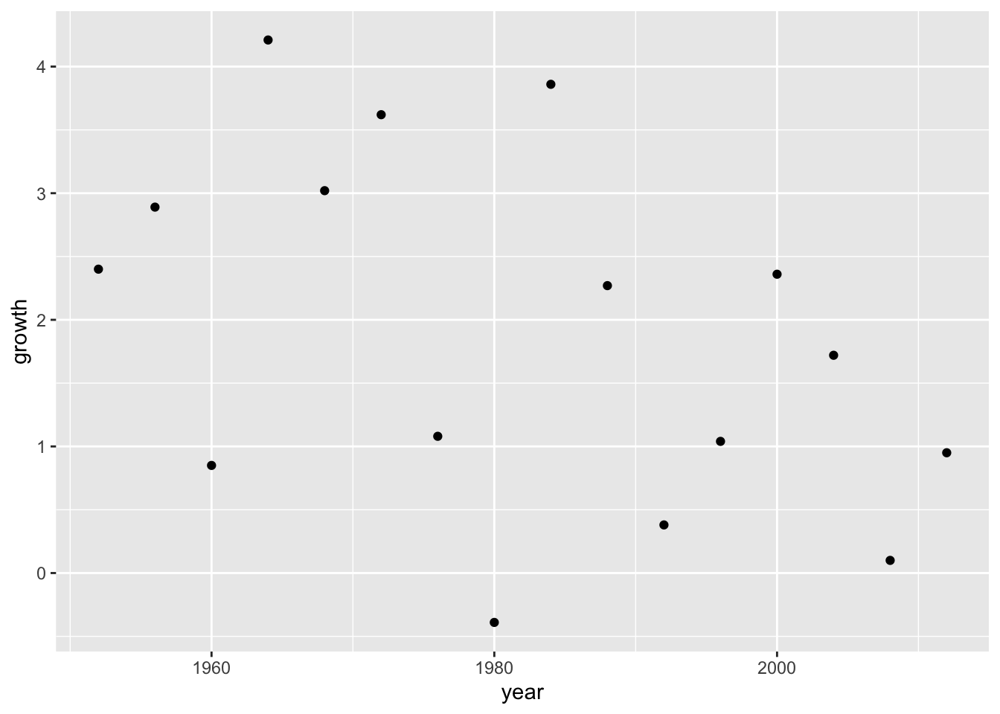
Add a line to the plot.
ggplot(data = elections_data) +
geom_point(aes(x = year, y = growth)) +
geom_smooth(aes(x = year, y = growth), se = FALSE)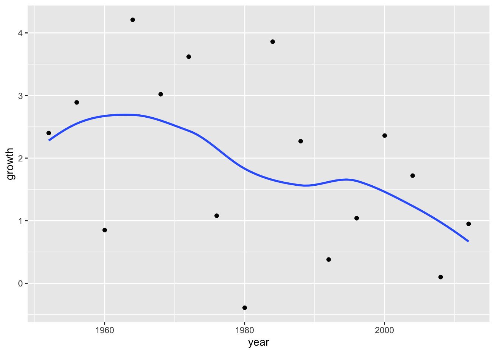
Add the CI around the line.
ggplot(data = elections_data) +
geom_point(aes(x = year, y = growth)) +
geom_smooth(aes(x = year, y = growth), se = TRUE)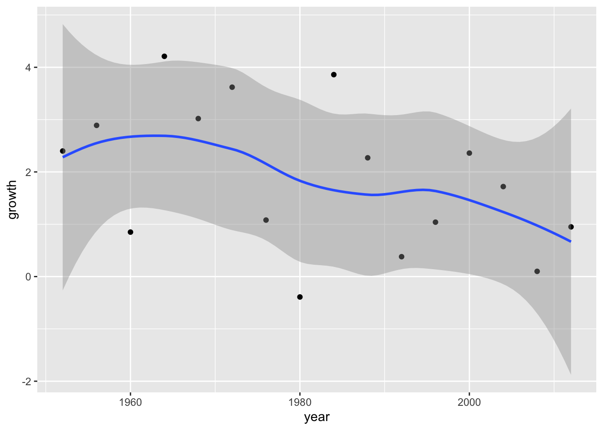
Fit ols-regression to obtain the predicted values.
mod1 <- lm(vote ~ growth, data = elections_data)Summarize the regression results.
summary(mod1)
Call:
lm(formula = vote ~ growth, data = elections_data)
Residuals:
Min 1Q Median 3Q Max
-8.9929 -0.6674 0.2556 2.3225 5.3094
Coefficients:
Estimate Std. Error t value Pr(>|t|)
(Intercept) 46.2476 1.6219 28.514 8.41e-14 ***
growth 3.0605 0.6963 4.396 0.00061 ***
---
Signif. codes: 0 '***' 0.001 '**' 0.01 '*' 0.05 '.' 0.1 ' ' 1
Residual standard error: 3.763 on 14 degrees of freedom
Multiple R-squared: 0.5798, Adjusted R-squared: 0.5498
F-statistic: 19.32 on 1 and 14 DF, p-value: 0.00061Plot the predicted values.
plot(elections_data$growth, elections_data$vote, xlab = "Economic Growth", ylab = "Vote Share")
abline(coef(mod1), col = "red")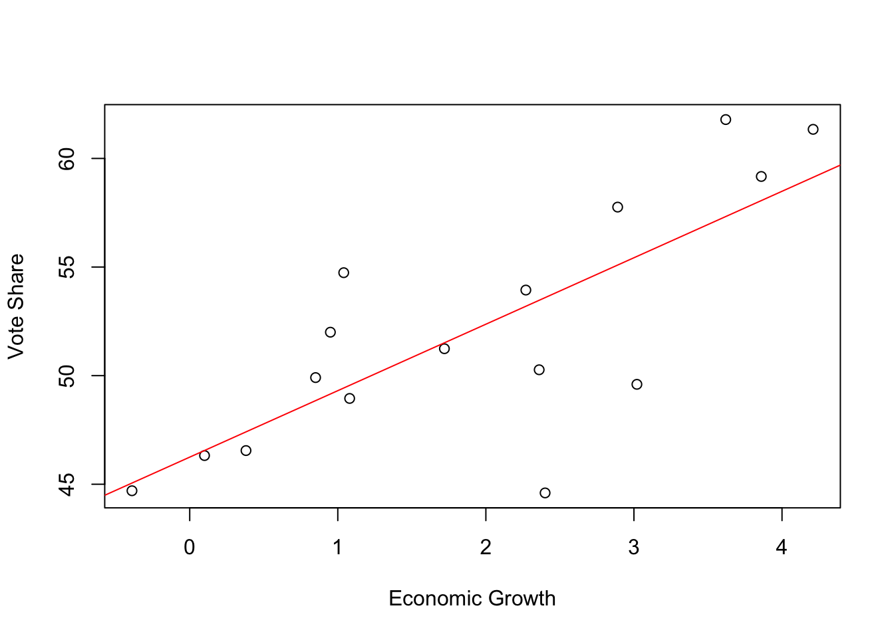
Predicted values with ggplot.
ggplot(data = elections_data) +
geom_point(aes(x = growth, y = vote)) +
geom_abline(intercept = mod1[[1]][[1]], slope = mod1[[1]][[2]], color = "red", size = 1) +
scale_x_continuous(labels = scales::label_percent(accuracy = 1, scale = 1)) +
scale_y_continuous(labels = scales::label_percent(accuracy = 1, scale = 1)) +
geom_hline(yintercept = 50) +
labs(title = "Data and linear fit",
x = "Average recent growth in personal income",
y = "Incumbent party's vote share")Warning: Using `size` aesthetic for lines was deprecated in ggplot2 3.4.0.
ℹ Please use `linewidth` instead.
Predicted values with ggplot and geom_smooth.
ggplot(data = elections_data) +
geom_point(aes(x = growth, y = vote)) +
geom_smooth(method = "lm", aes(x = growth, y = vote), color = "blue", size = 1) +
scale_x_continuous(labels = scales::label_percent(accuracy = 1, scale = 1)) +
scale_y_continuous(labels = scales::label_percent(accuracy = 1, scale = 1)) +
geom_hline(yintercept = 50) +
labs(title = "Data and linear fit",
x = "Average recent growth in personal income",
y = "Incumbent party's vote share")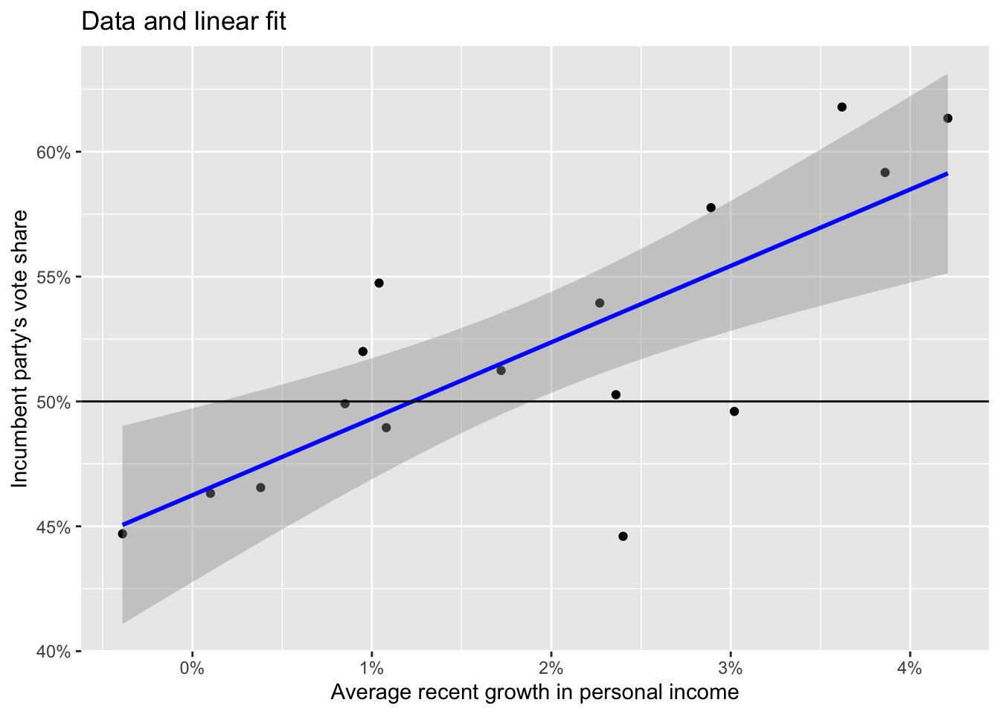
- Sketching regression
Original \(y = 46.3 + 3.0 x\). Explore the descriptive stats to get some parameters based on the observed data.
elections_data |>
summarise(min_growth = min(growth),
max_growth = max(growth),
mean_growth = mean(growth),
sd_growth = sd(growth),
min_vote = min(vote),
max_vote = max(vote),
mean_vote = mean(vote),
sd_vote = sd(vote)) min_growth max_growth mean_growth sd_growth min_vote max_vote mean_vote
1 -0.39 4.21 1.8975 1.395538 44.6 61.79 52.055
sd_vote
1 5.608951Simulating the data (technique often used in this book).
set.seed(123)
N <- 16
simu_growth <- runif(N, -0.39, 4)
simu_vote <- rnorm(N, 46.2476 + 3.0605*simu_growth, 3.763)
simu_elections <- data.frame(N,simu_growth, simu_vote)Model the simulated data.
simu_mod <- lm(simu_vote ~ simu_growth, data = simu_elections)Summarize the model.
summary(simu_mod)
Call:
lm(formula = simu_vote ~ simu_growth, data = simu_elections)
Residuals:
Min 1Q Median 3Q Max
-6.355 -1.513 -0.488 1.839 5.962
Coefficients:
Estimate Std. Error t value Pr(>|t|)
(Intercept) 43.6769 1.7558 24.876 5.49e-13 ***
simu_growth 4.0052 0.6948 5.765 4.90e-05 ***
---
Signif. codes: 0 '***' 0.001 '**' 0.01 '*' 0.05 '.' 0.1 ' ' 1
Residual standard error: 3.448 on 14 degrees of freedom
Multiple R-squared: 0.7036, Adjusted R-squared: 0.6824
F-statistic: 33.23 on 1 and 14 DF, p-value: 4.896e-05Plot the simulated data using base graphics.
# Base graphic
plot(simu_elections$simu_growth, simu_elections$simu_vote, xlab = "Simulated Economic Growth", ylab = "Simulated Vote Share")
abline(coef(simu_mod), col = "blue")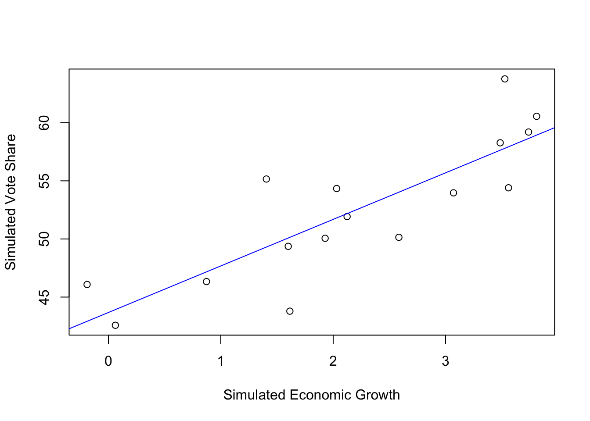
Plot the samen using ggplot version.
ggplot(data = simu_elections) +
geom_point(aes(x = simu_growth, y = simu_vote)) +
geom_smooth(method = "lm", aes(x = simu_growth, y = simu_vote), color = "blue", size = 1) +
scale_x_continuous(labels = scales::label_percent(accuracy = 1, scale = 1)) +
scale_y_continuous(labels = scales::label_percent(accuracy = 1, scale = 1)) +
geom_hline(yintercept = 50) +
labs(title = "Simulated Data and linear fit",
x = "Simulated Average recent growth in personal income",
y = "Simulated Incumbent party's vote share")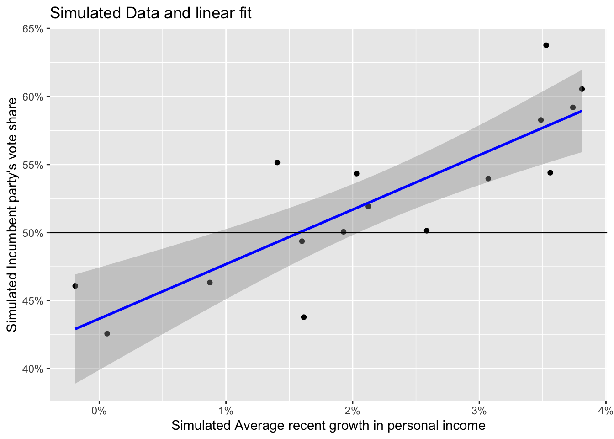
Exercise 1.2(a) from ROS for sketching a regression model and data.
- \(y = 30 + 10x\) (residual \(sd 3.9\)) & values of X ranging from \(0-4\)
Define the data.
set.seed(123)
N <- 50
x <- runif(N, 0, 4)
y <- rnorm(N, 30 + 10*x, 3.9)
data <- data.frame(N, x, y)Model the data.
lm_a <- lm(y ~ x, data)Plot the data.
plot(data$x, data$y, xlab = "X Value", ylab = "Y value")
abline(coef(lm_a), col = "red", size = 1)Warning in int_abline(a = a, b = b, h = h, v = v, untf = untf, ...): "size" is
not a graphical parameter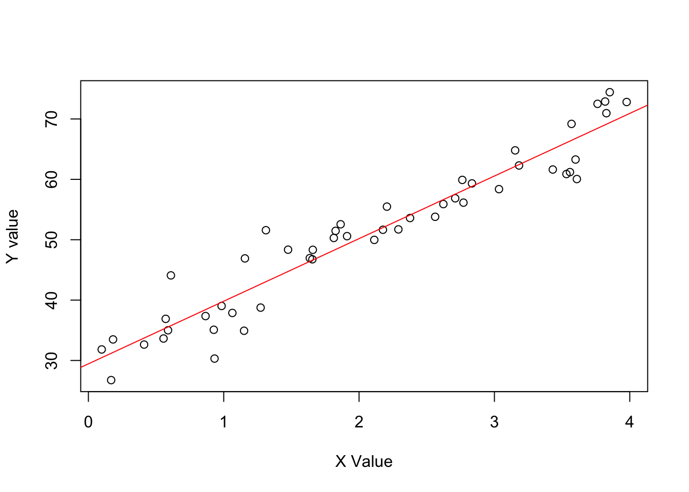
- \(y = 30 + 10x\) (residual \(sd 10\)) & values of X ranging from \(0-4\).
Define the data.
set.seed(123)
N <- 50
x <- runif(N, 0, 4)
y <- rnorm(N, 30 + 10*x, 10)
data <- data.frame(N, x, y)Model it.
lm_b <- lm(y ~ x, data)Plot it.
plot(data$x, data$y, xlab = "X Value", ylab = "Y value")
abline(coef(lm_b), col = "blue")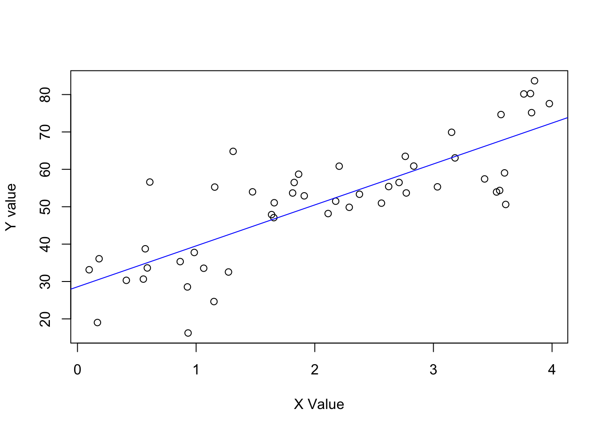
Now simulate a binary predictor example from the Aki Vehtari GH
See Figure 1.5 (page 10).
set.seed(1411)
N <- 50
x <- runif(N, 0, 4)
y <- rnorm(N, 30 + 10*x, 10)
x_binary <- ifelse(x < 3, 0, 1)
data_simu <- data.frame(N, x, y, x_binary)Model it.
lm_binary <- lm(y ~ x_binary, data = data_simu)Summarize the model.
summary(lm_binary)
Call:
lm(formula = y ~ x_binary, data = data_simu)
Residuals:
Min 1Q Median 3Q Max
-27.2063 -8.5257 0.5297 9.3644 27.8011
Coefficients:
Estimate Std. Error t value Pr(>|t|)
(Intercept) 45.812 2.296 19.953 < 2e-16 ***
x_binary 19.033 3.827 4.974 8.81e-06 ***
---
Signif. codes: 0 '***' 0.001 '**' 0.01 '*' 0.05 '.' 0.1 ' ' 1
Residual standard error: 12.99 on 48 degrees of freedom
Multiple R-squared: 0.3401, Adjusted R-squared: 0.3264
F-statistic: 24.74 on 1 and 48 DF, p-value: 8.813e-06Plot the relationship.
ggplot(data = data_simu) +
geom_point(aes(x = x_binary, y = y)) +
geom_abline(intercept = lm_binary[[1]][[1]], slope = lm_binary[[1]][[2]],
color = "blue", size = 1) +
labs(y = "Crime reduction",
x = NULL) +
scale_x_continuous(breaks = c(0,1),
labels = c("Control", "Treatment")) +
annotate(geom = "text", x = 0.50, y = 40,
label = paste("Estimated treatment effect is\nslope of fitted line: ",
round(lm_binary[[1]][[2]], digits = 2)))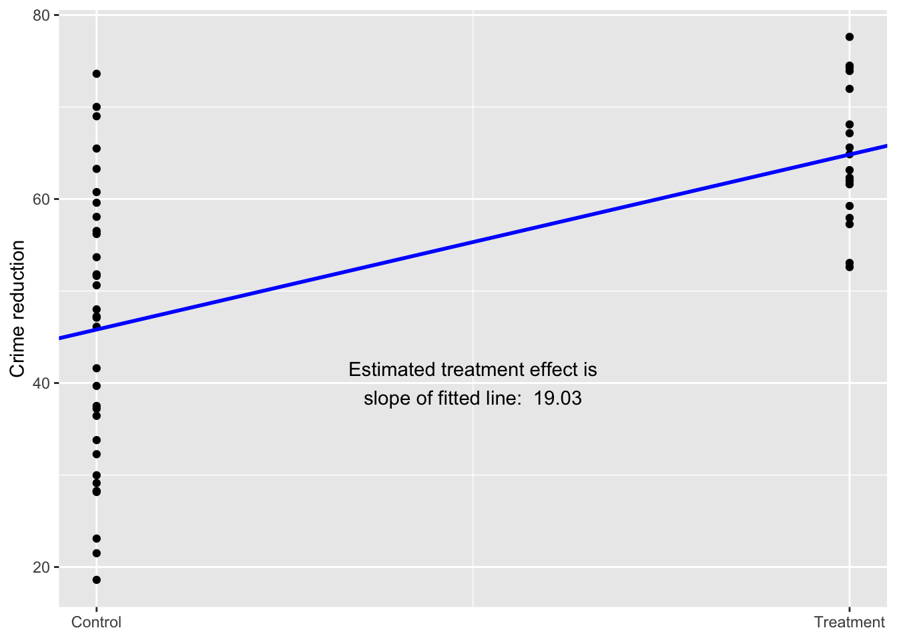
Non-linear relationship
set.seed(1411)
x <- runif(N, 1, 7)
y <- rnorm(N, 7 + 30*exp(-x), 2)
data_simu$y <- yFit the model.
lm_nonlinear <- lm(y ~ x, data = data_simu)Summarize the model.
summary(lm_nonlinear)
Call:
lm(formula = y ~ x, data = data_simu)
Residuals:
Min 1Q Median 3Q Max
-6.0484 -1.4874 -0.0243 1.7868 4.4113
Coefficients:
Estimate Std. Error t value Pr(>|t|)
(Intercept) 13.1516 0.6188 21.253 < 2e-16 ***
x -1.8761 0.2476 -7.579 9.6e-10 ***
---
Signif. codes: 0 '***' 0.001 '**' 0.01 '*' 0.05 '.' 0.1 ' ' 1
Residual standard error: 2.21 on 48 degrees of freedom
Multiple R-squared: 0.5447, Adjusted R-squared: 0.5353
F-statistic: 57.43 on 1 and 48 DF, p-value: 9.599e-10Plot the model outcome.
ggplot(data = data_simu) +
geom_point(aes(x = x, y = y)) +
geom_smooth(method = "loess", aes(x = x, y = y), color = "blue", size = 1, se = FALSE) +
labs(y = "Theft counts per hour",
x = "Hours of foot patrol") 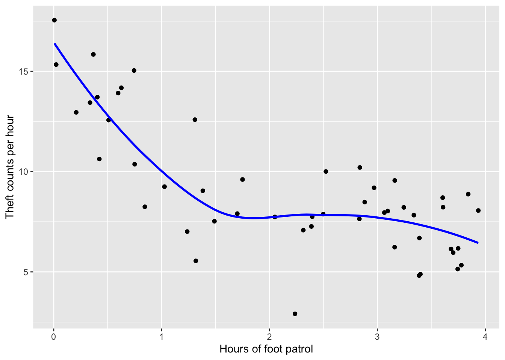